PAPERREADER
User Guide
PaperReader is a reading and study assistant for iPad. You bring a web page, a PDF, or a piece of text into the app; PaperReader makes it readable, summarizes, explains, and translates it with AI — and you take notes on top of everything with the pencil. This guide walks through the whole app step by step, with screenshots, in a way even a first-time user can comfortably follow.
1. What is PaperReader?
You've found a long article online. You want to read it, but it's in a foreign language, it's long, and the terminology is heavy. PaperReader was built for exactly this moment. You bring the page into the app; the original text sits on the left, and on the right is your workspace: with a tap you generate a summary, read the text in your own language, see explanations of unfamiliar terms, have flashcards prepared for you, and ask the text questions.
Most importantly: nothing is collected automatically. You always decide which source enters the app. PaperReader doesn't crawl in the background and never logs in anywhere on your behalf; it's an assistant that sits beside you while you read.
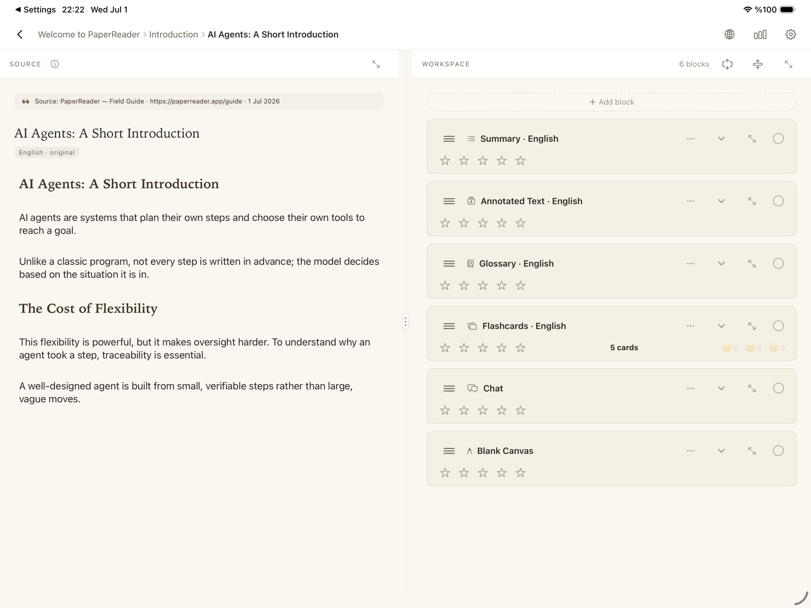
2. Three core concepts: Notebook, Section, Work
Everything in PaperReader lives in a three-level structure. Think of it like a paper notebook:
A Notebook is the top-level container. You open one per topic or purpose: "Thesis Research", "English Articles", "Hobbies". Notebooks are listed in the sidebar on the left.
A Section is a page tab inside a notebook. It keeps related sources together: a "Thesis Research" notebook might have "Sources", "Counterarguments", and "Drafts" sections. Sections appear as tabs along the top.
A Work is the reading and note-taking space tied to a single source. Every source you add (web page, PDF, text) becomes a work and lives inside a section.
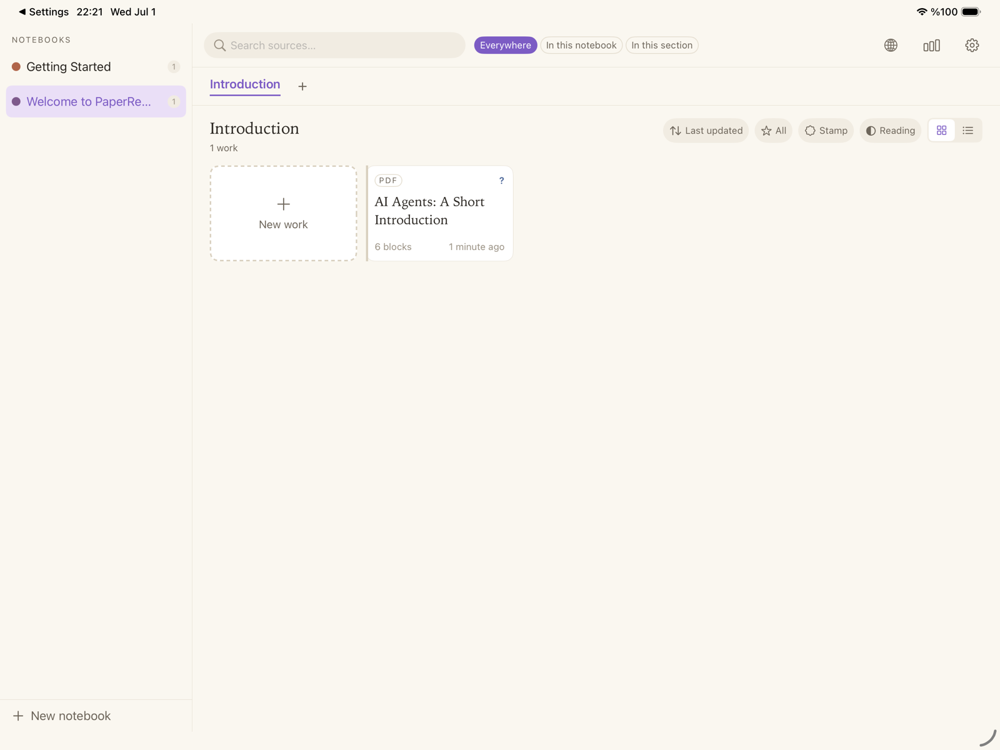
To create a notebook, tap "+ New notebook" at the bottom of the sidebar; for a new section, tap the "+" next to the tabs. You can reorder notebooks and sections by dragging, and rename them from their long-press menu. Moving a work to another section is just as easy — press and hold its card and drop it on the target tab.
3. Create your first work — 4 ways to add a source
Tapping the "+ New work" card in a section opens the "Add new source" window. At the top you see which notebook and section the work will go into; below are four channels:
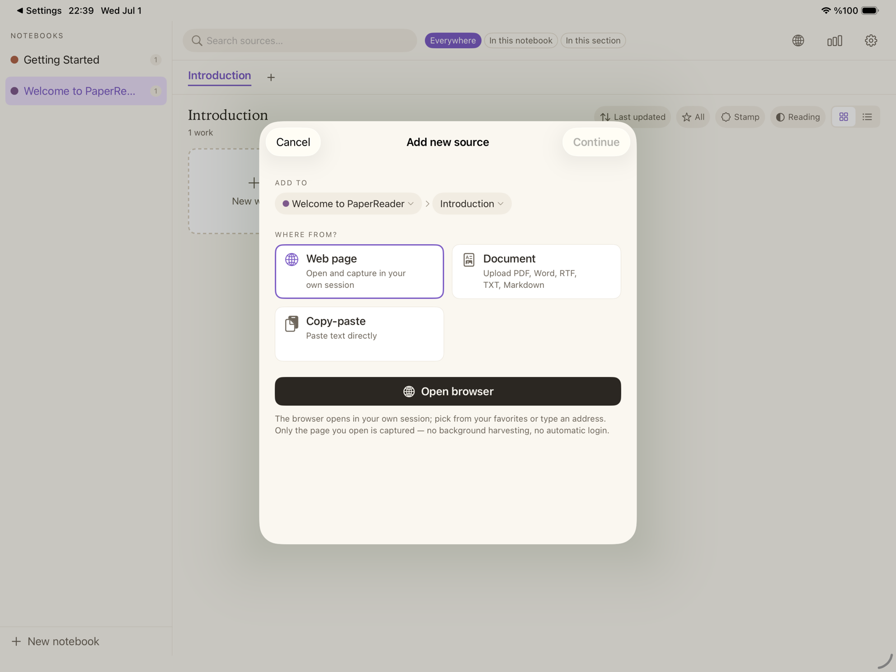
Web page
Tap "Open browser" and PaperReader's built-in browser appears. It works like any browser you know: type an address, search, and sign in to sites with your own accounts (your subscriptions work). Save the sites you use often as favorites by tapping the star; favorites live on the browser's start page as a board organized into categories.
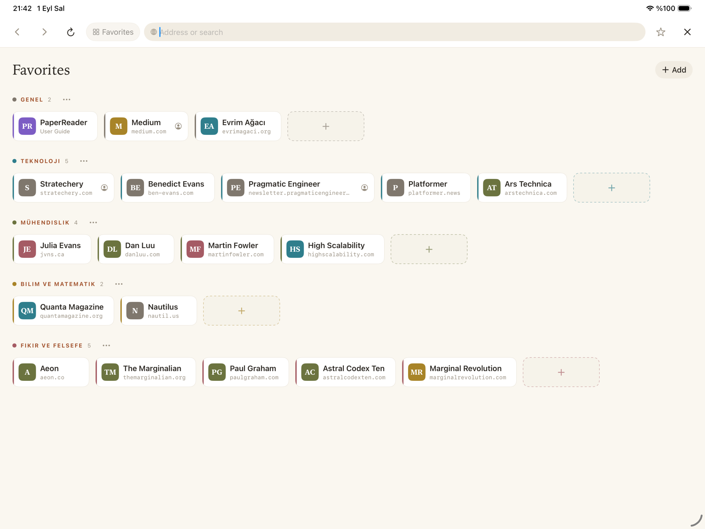
When you reach the page you want to study, tap "Create Work". The page's text and images are captured, your work is created and opens automatically. Because images are downloaded to your device, the work stays complete even if the page later disappears from the web.
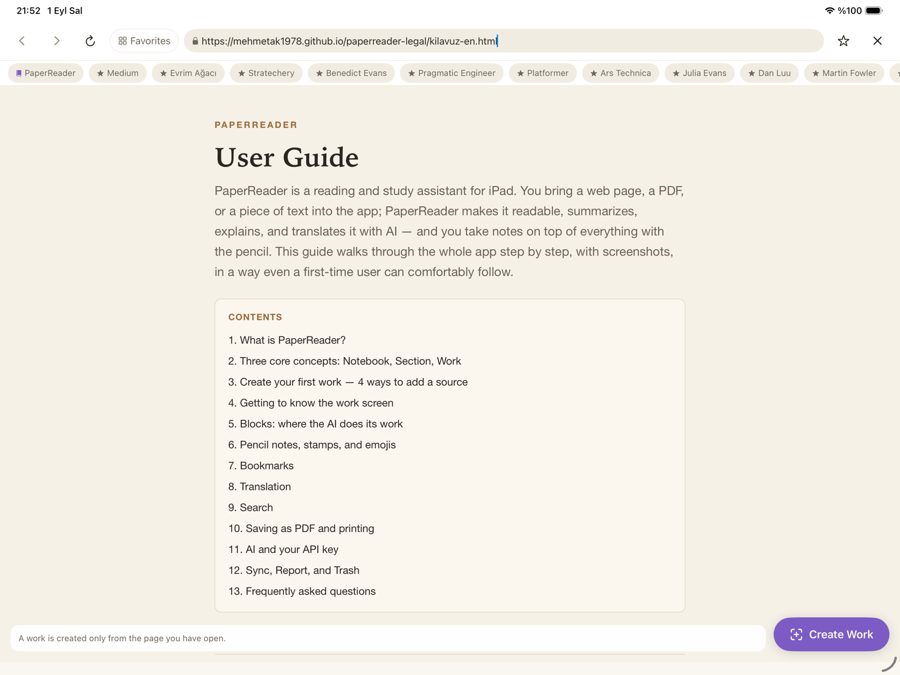
Document
Imports PDF, Word (docx), RTF, TXT, and Markdown files. Pick the file, PaperReader splits the text into blocks while preserving headings and embedded images, you confirm the preview, and your work is ready.
Copy-paste
Paste text you've copied from anywhere. The text is split into paragraph blocks at empty lines.
Share sheet
With a page or file open in Safari or another app, tap the system Share button and pick PaperReader from the list. The link or file lands directly in PaperReader; you confirm the target section and the rest is the same.
About the free tier: you can add 10 sources to PaperReader for free. For more, upgrade to the PaperReader Pro subscription inside the app. Deleting sources does not give the allowance back, so we recommend spending your first sources on content you genuinely want to study.
4. Getting to know the work screen
Opening a work splits the screen in two.
Left panel — Source: the original form of what you added. The text is never modified and is always in its original language; at the top sits a citation line with the author, publication, and address. This panel is read-only: it's there so you can always return to the source itself.
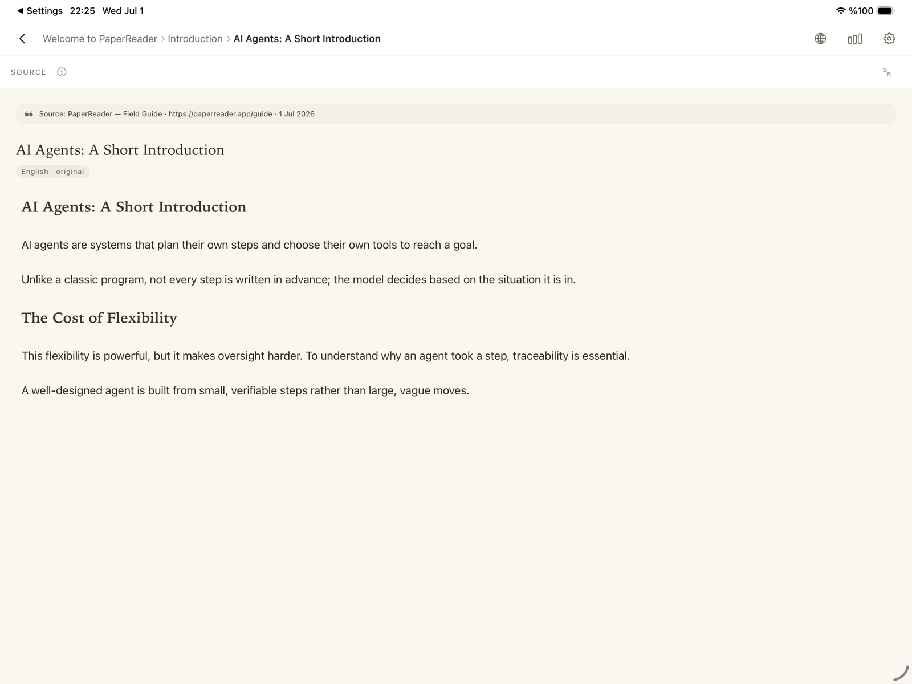
Right panel — Workspace: your page. This is where you add blocks (covered one by one in the next chapter). Tap a block's header to open or close it, and use the maximize icon in the header to take it full screen — the most comfortable view for reading and pencil notes. Drag the divider between the panels to adjust their widths.
5. Blocks: where the AI does its work
Tap "+ Add block" in the right panel to see the block types. The AI-generating blocks (Summary, Annotated Text, Glossary, Flashcards) first ask which language you want — the source's original language or one of your translation languages — then the content is generated once and frozen into the block: if you ever want a new version, you add a new block.
Summary
Turns the whole source into a structured summary. A MAIN IDEA box sits at the top and a CONCLUSION box at the bottom; in between, key points, definitions, and examples are marked with colored callouts. You can set the summary length from short to long in Settings.
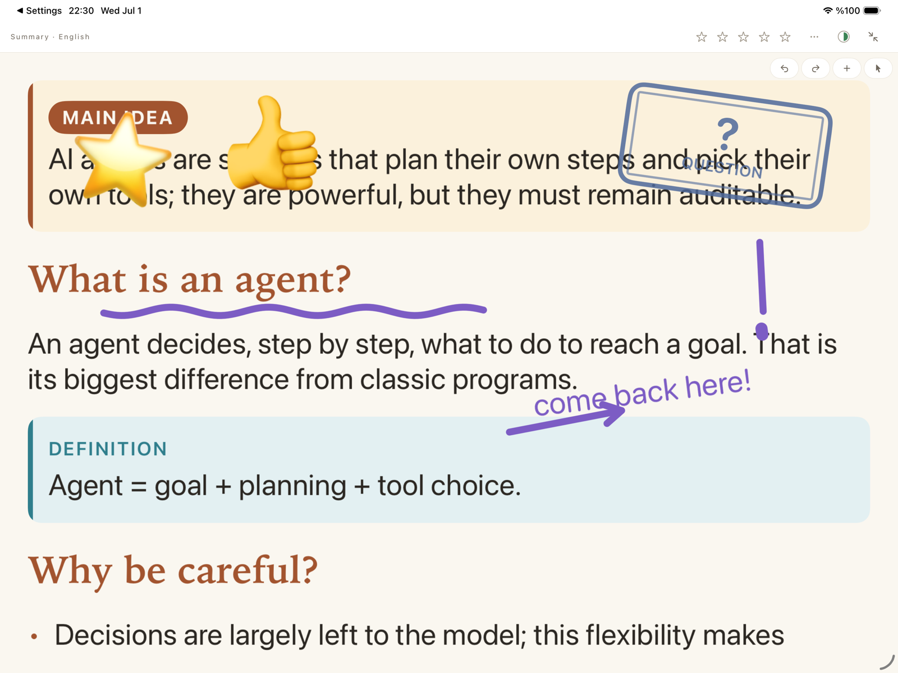
Annotated Text
Keeps the source's text word for word and adds an annotation layer on top: DEFINITION, TERM, IMPORTANT, and EXAMPLE boxes appear between the paragraphs, and key terms are highlighted as if marked with a highlighter. The text itself is never rewritten — every sentence you read is the source's own sentence. This is the most powerful tool for reading a foreign-language source in your own language, with explanations.
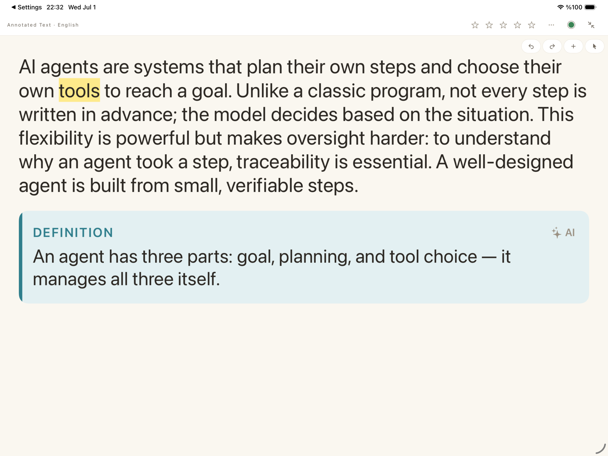
Glossary
Collects the source's important terms and short definitions in a single list. It's a frozen reference; add your own pencil notes on top if you like.
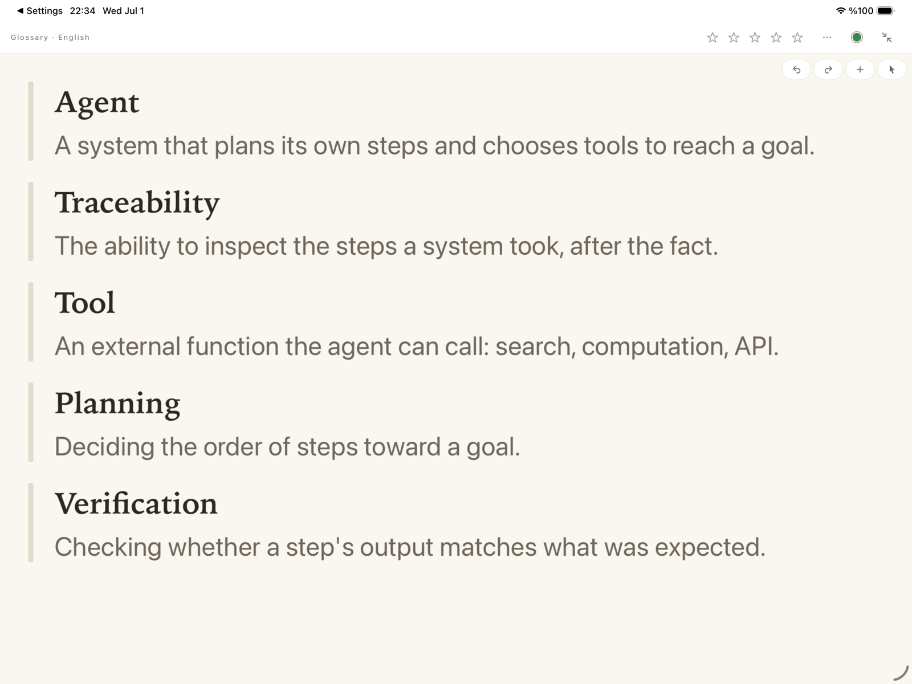
Flashcards
Generates question-and-answer cards from the source. You preview the cards first, drop the ones you don't want, then confirm your deck. While studying, tap a card to flip it and swipe to move on; after each answer you grade how well you knew it with face icons. Those grades use spaced-repetition logic to decide when each card comes back — the ones you struggle with appear often, the ones you know appear rarely.
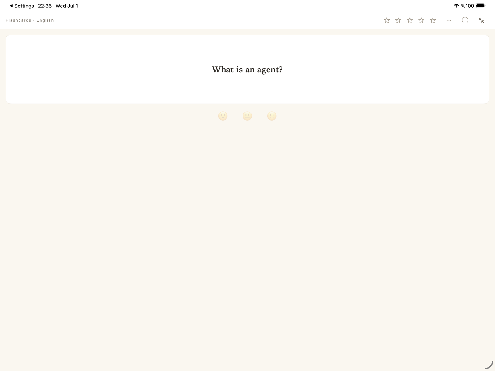
Chat
Talk to your source: ask things like "What is this author arguing?", "Explain chapter three simply", or "What is this claim based on?" and watch the answer stream in live. You can widen the scope: just this source, all sources in this section, or the whole notebook. There is also a General mode: you ask for general knowledge without being tied to the source; those answers are marked with a "General knowledge" badge so nothing gets mixed up. Each chat block keeps its own independent conversation — open different chat blocks for different topics.
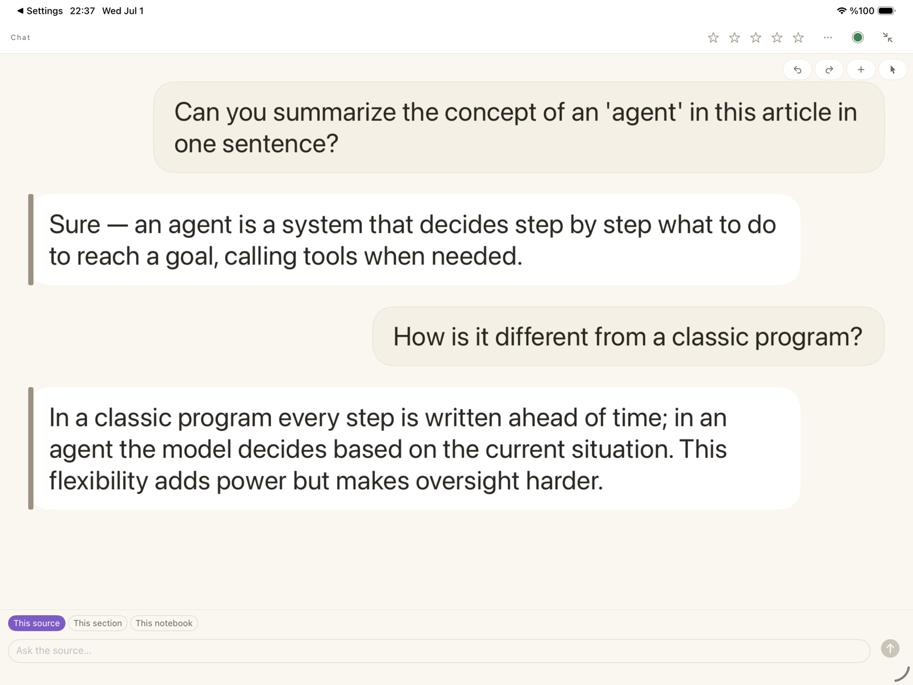
Blank canvas
A completely empty page with no printed content underneath. For sketching your own diagram, keeping lecture notes, or brainstorming — it grows downward as you write.
6. Pencil notes, stamps, and emojis
The pencil is the heart of PaperReader. You can handwrite, draw, and highlight on top of every block — the summary, the annotated text, the glossary. The pencil draws, a finger scrolls; there's no mode to switch. The tool palette at the bottom lets you pick the pen type, color, and eraser. Your notes are aligned to the content: scroll, zoom, or take the block full screen — everything you wrote stays exactly in place.
The "+" button in the toolbar opens the Place menu. From here you can add:
- Text box: a free-floating note typed with the keyboard, movable anywhere. Font, size, and color are configurable.
- Stamps: seals like "important", "question", and "look again" — the fastest way to mark a paragraph.
- Date stamp: stamps and freezes the date you placed it; the answer to "when did I read this?" is always right there.
- Digits (0–9): for numbering steps or priorities.
- Emojis: reaction stickers like ⭐️ 👍 👏.
A handy tip: press and hold the canvas with a finger and the Place menu opens, dropping your chosen item exactly where you pressed. The arrow button at the far right of the toolbar is selection mode: use it to select placed stamps and text boxes later, then move, resize, rotate, or delete them. Every operation can be undone.
7. Bookmarks
In a long text, pin the spots you'll come back to with a bookmark: choose Bookmark from the Place menu and a small pin settles at the start of the line. Each bookmark can carry tags ("important", "quote", "exam material"…) and a short note.
All your bookmarks gather in a single list: tap the Bookmarks row in the library sidebar. Filter the list by notebook, tag, or search text; tapping a row opens the work and jumps to the exact line you marked.
8. Translation
In Settings you keep an ordered list of target languages (Turkish, English, German… 30 languages). When creating AI blocks you pick one of them: ask for the Annotated Text of an English article in Turkish, say, and the text is translated with the annotations arriving in Turkish. Once translated, a text is remembered — the second visit to the same language opens instantly. The original in the left panel always stays as it is; translation always lives in the right panel, in the block you asked for.
9. Search
The search box above the library works on two layers. First it finds exact matches: if your word appears in a title or in the text, it's listed. But here's the nice part: it also finds semantically related passages — search for "AI safety" and paragraphs about that topic appear under "Related in meaning" even if those exact words never occur. Tapping a result opens the work and jumps to that very passage, shown with a temporary highlight. You can also choose the scope: everywhere, this notebook, this section, or your bookmarks.
10. Saving as PDF and printing
Any block can be exported as a print-friendly PDF — together with all the pencil notes, text boxes, and stamps on it: choose "Save as PDF" from the block's ••• menu. Print the file, share it, or save it to Files. The source's citation line is added to the top of the PDF automatically, so its origin is always clear.
11. AI and your API key
PaperReader's AI features (summary, annotated text, translation, flashcards, chat) run on your own API key. This is a deliberate design: there is no middleman, and your content never passes through our servers — it goes directly from your device to the AI provider you chose, and only with your consent.
How do I add a key?
- Get your own API key from an AI provider (Google Gemini, Anthropic, OpenAI, or Groq). Keys are issued on the provider's own site with a free or pay-as-you-go account.
- In PaperReader, go to Settings → AI Provider Connections, pick your provider, and paste the key. The app tests the connection; once you see the green "Connected" badge, you're set.
- Your key is stored only in your device's secure storage (Keychain); it is never shared with us or anyone else.
Tip — set a spending cap: most providers let you set a monthly spending limit on your account. We recommend setting one when you create your key: it rules out surprise bills from the start. If you ever hit the cap, raising it on the provider's site is all it takes.
Before your first AI operation, the app tells you clearly which provider your data will be sent to and asks for your consent. You can also track your spending inside the app: the usage panel in Settings shows roughly what each kind of operation cost, category by category.
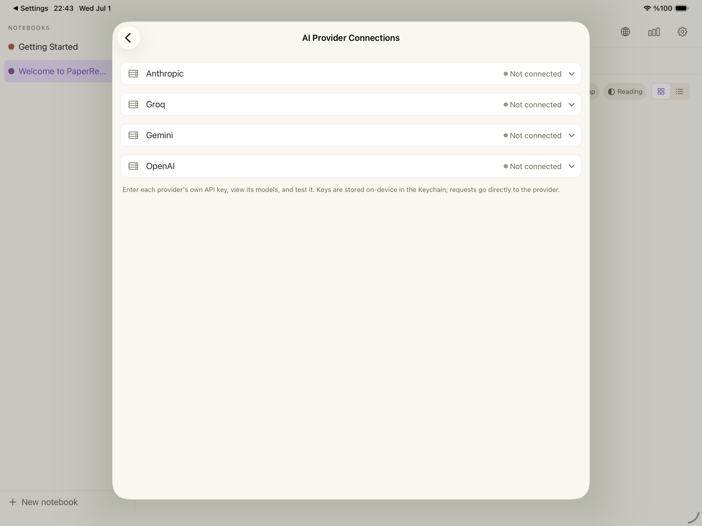
What works without a key? Reading, pencil notes, stamps, bookmarks, organization, search, and PDF export all work fully without a key. The AI blocks, however, won't generate content without one — in that case the app gently lets you know and can still create an empty Annotated Text block for you to write notes on.
12. Sync, Report, and Trash
iCloud sync: your works, notes, and cards sync automatically between your devices via iCloud; even if you delete and reinstall the app, your library comes back. There's no switch to manage. Your API key, for security, is never synced — you enter it once per device.
Report: the chart icon in the library's top bar opens a report of your reading habits: how many sources you added, how much you finished, how your cards are doing, what your AI spending looks like — all in charts filterable by time window.
Trash: deleted notebooks, sections, works, and blocks first go to Settings → Trash. From there you can restore them with a tap or delete them permanently. Accidental deletions are recoverable.
13. Frequently asked questions
- Does it work offline?
- Reading your existing works, pencil notes, and organization work fully offline (images are downloaded to your device too). Adding new web sources and the AI features need a connection.
- Where does my data go?
- Your works are stored in your own iCloud account's private space; we cannot see them. When you use AI, the relevant text goes directly to the provider you chose, only with your consent. PaperReader itself collects no data.
- Do I have to get an API key?
- No. Reading, note-taking, and organization are complete without one. Add a key whenever you want the AI features; you can remove it at any time.
- What does "10 free sources" mean?
- The free tier lets you add a total of 10 sources (works). For unlimited sources, upgrade to PaperReader Pro inside the app.
- I deleted the sample works — can I get them back?
- Restore them from the Trash; if you deleted them permanently, reinstall them from Settings → Sample Work.
- Can I see the guided tour again?
- Yes: Settings → Appearance → "Start the guided tour".